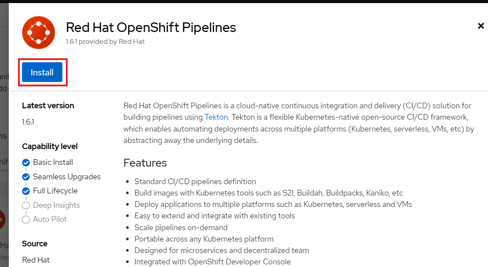
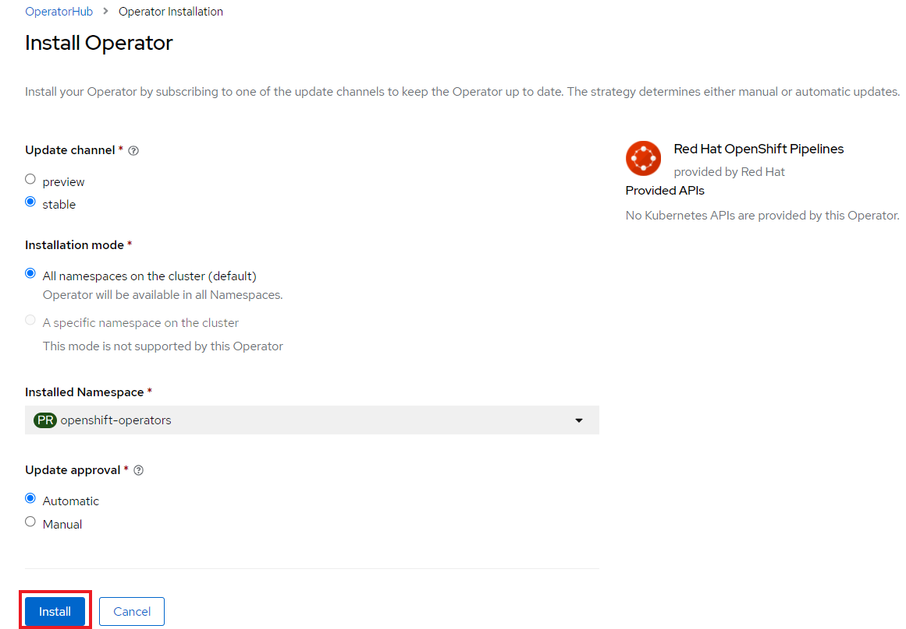

Red Hat Advanced Cluster Security を使用したアプリケーションへの自動化セキュリティの実装とDevSecOpsの構築
ラボの目的
このラボの目標は、さまざまなセキュリティツールの組み合わせをオーケストレーションする、安全なソフトウェアファクトリを構築する方法を学ぶことです。
DevSecOps の出現により、セキュリティは前面と中心に置かれ、人、プロセス、および、技術の面で対処されるようになりました。
セキュリティツールはビルドプロセスに統合されており、CI/CDパイプラインに組み込まれたセキュリティゲートでセキュリティ要件が満たされない場合、簡単にビルドを中断することができます。
序章
DevOpsと継続的インテグレーション／継続的デリバリー（CI/CD）の利点は、長年にわたって大きな成果とともに実証されてきました。
組織は常に、より少ない人数でより多くのことを行うことを求めてきました。セキュリティは多くの場合、ソフトウェア提供プロセスの末端のアドオンとして扱われ、ソフトウェアデリバリの遅延につながることも少なくありませんでした。
業界は、これを変えなければならないことを認識しました。
組織は、契約上および規制上の義務や社内のセキュリティ標準を引き続き満たす必要がありますが、機会を生かすためにソフトウェアデリバリを加速させる必要があります。組織がこれらの標準を満たし、DevOpsのスピードでデリバリーできるようにするために、セキュリティは、無関係になるか、最新のソフトウェアデリバリプラクティスに適合するかの選択に迫られています。
セキュリティはソフトウェアを迅速に提供するために不可欠であり、ソフトウェア品質の指標となっているため、"DevOps" に "Sec" を含めることが推奨されています。
DevSecOpsの登場により、Shift Leftはソフトウェアデリバリプロセスの早い段階で不具合を発見し、防止することを目的としたプラクティスとなりました。セキュリティツールは、ビルドプロセスに直接統合されます。その結果、CI/CDプロセスをより速く進め、デリバリーまでの期間を短縮しながら、各リリースの品質を継続的に向上させることができるのです。
この実習では、典型的な CI/CD アプリケーションパイプラインに自動化されたセキュリティコンプライアンス制御を実装するために使用される技術のいくつかに焦点を当てます。
DevSecOps パイプラインをサポートするために、多くのツールがインストールされ、事前に設定されています。これらのツールのほとんどは、Red Hat OpenShift クラスター内でコンテナ化されて実行されています。
以下は、私たちのラボでステップスルーするパイプラインです:

DevSecOpsのCI/CDパイプラインでは、次のような技術を使用します:
セットアップ
OpenShift Pipelines と OpenShift GitOps のインストール
まずはじめに、OpenShift Pipelines と OpenShift GitOps をインストールします。
OpenShift Pipelines と OpenShift GitOps はそれぞれ Operator が用意されており、OpenShift Web コンソールの OperatorHub から簡単にインストールすることができます。
Web コンソールに cluster-admin でログインしたら、左のメニューから "Operators" > "OperatorHub" を選択し、OperatorHub の画面に移ります。
OperatorHub の画面で、Red Hat OpenShift Pipelines の Operator を検索し、これをクリックします。

画面の右側に Operator の詳細が表示されます。上部にある "Install" のボタンをクリックします。

OpenShift Pipelines Operator の channel や Installation mode などの設定画面が表示されます。設定は変更せず、デフォルトの設定のまま下部にある "Install" のボタンをクリックします。これで自動的にインストールが始まります。
(設定項目の選択肢が図と異なることがありますが、デフォルトのままで構いません)

再度左のメニューから "Operators" > "Installed Operators" を選択し、インストールされている Operator の一覧に、OpenShift Pipelines Operator が表示されていることを確認します。Operator の Status が "Succeeded" となるまで待ちます。 (おおむね5分も待てばよいでしょう)
同様に、Red Hat OpenShift GitOps もインストールします。


OpenShift GitOps Operator の channel や Installation mode などの設定画面が表示されます。設定は変更せず、デフォルトの設定のまま下部にある "Install" のボタンをクリックします。これで自動的にインストールが始まります。
(設定項目の選択肢が図と異なることがありますが、デフォルトのままで構いません)

再度左のメニューから "Operators" > "Installed Operators" を選択し、インストールされている Operator の一覧に、OpenShift GitOps Operator が表示されていることを確認します。Operator の Status が "Succeeded" となるまで待ちます。 (おおむね5分も待てばよいでしょう)
サンプルパイプラインのデプロイ
OpenShift Pipelines と OpenShift GitOps を使ってパイプラインを手で構築してもよいのですが、ここではサンプルで用意しているパイプラインを使って CI と CD を体験します。
次のように Git リポジトリをクローンして、シェルスクリプトを実行します。シェルスクリプトでは Ansible の Playbook が実行され、自動的にパイプラインが作られます。
cd
git clone https://github.com/tutsunom/Devsecops-CI-CDPipeLineDemo.git
cd Devsecops-CI-CDPipeLineDemo
./install.sh|
前段の System Policies の演習の最後に、"Fixable Severity at least Important" Policy を "Build" と "Deploy" のステージで enforce するように設定していると、Playbook は途中で fail します。 これは、パイプラインで使用するアプリケーションがこの Policy に抵触し、その結果 Pod がデプロイできないためです。 "Fixable Severity at least Important" Policy を "Deploy" で enforce しないように修正して、再度 Playbook を実施して下さい。 |
継続的インテグレーション
このモジュールでは、サンプルで用意しているセキュアなパイプラインを OpenShift Pipelines で実行し、各ステップを確認してみます。
このラボでは、Tekton パイプラインの開始方法と、開発ライフサイクル内でセキュリティと gitops ツールを統合するためのタスクの使用方法を学習します。
-
パイプラインを開始するには、いくつかの方法があります。以下のOptionいずれかで、パイプラインを開始してください:
-
Option 1: Developer UIを使用して開始する場合
-
ブラウザで OpenShift Console の URL を参照します。
-
提供されたadminユーザの認証情報を使用してコンソールにログインします。
-
まだ開発者パースペクティブにいない場合は、左上の開発者コンソールに切り替えるためにDeveloperを選択します。

-
cicdプロジェクトに移動します。
-
左メニューの
Pipelinesをクリックすると、すべてのパイプラインが表示されます。
-
" petclinic-build-dev "パイプラインをクリックします。

-
右上の “Actions” をクリック → “start” を選択します。
-
"Workspaces"でPVCを選択し、パイプラインが実行時に使用する共有ストレージのパスとしてPVC petclinic-build-workspaceを選択します。
-
"maven-settings" で「Config Map」を選択し、"maven-settings" をConfig Mapとして選択します。

-
start をクリックします。
-
-
Option 2: 新しいコードがgit repoにpushされると、パイプラインを開始するトリガーにもなります。このラボでは、git repo は Gogs です。以下の手順は、「Gogs」git repo経由でコードをプッシュするためのものです。 このオプションは、開発者の観点からすると最もポピュラーなものかもしれません。PR や git リポジトリへのプッシュからパイプラインが始まり、webhook が自動的にパイプラインを開始します。
-
開発コンソールから、左のナビメニューにある
Searchをクリックします。 -
'route’と入力し、リストの中から
Routeをクリックします。
-
Gogsルートをクリックすると、gogs の URL が表示されます:
-
サインインをクリックし、gogsadminの認証情報でログインします。
User: gogs
Password: gogs
-
gogsadminアカウント内のspring-petclinicリポジトリを選択します:

-
README.mdをクリックし、
Edit this fileをクリックし、変更を加えてください:
-
導入した変更をREADME.mdにコミットします:

[注意] これはあくまでデモのためのものです。通常、master への push は推奨されず、代わりに他のブランチ (例えば develop) からの Pull Request / Merge Request を使用します。
-
パイプラインは自動的にトリガーされます。このラボのステップ 6 にスキップして、Pipeline Runs コンソールを確認してください。
-
-
-
提供されたOpenShiftコンソールのURLを使って、ブラウザを開きます。
-
提供されたクレデンシャルを使用してコンソールにログインします。
-
Developerをクリックすると、開発者用コンソールに切り替わります。 -
cicdプロジェクトが選択されていることを確認してください。
-
左メニューの
Pipelinesをクリックすると、すべてのパイプラインが表示されます。
-
パイプラインの
petclinic-build-devをクリックし、Pipeline Runsタブをクリックします。
-
Pipeline Runsタブで実行中のパイプラインをクリックします。パイプラインが起動していると下図のようなPipeline Run detailsが表示されますので、状況をご覧ください。

しばらくすると、パイプライン実行のステップ「image-check」で失敗します。これは、イメージに含まれる重要な深刻度の脆弱性がパイプラインゲートポリシーに引っかかり、デプロイが停止するためです。

パイプラインを正常に完了させるためには、この脆弱性を修正する必要があります。次のモジュールでそれを行います。以下は、正常に実行された場合の状態です。

次のモジュールでは、何が起こったのか確認し、それを安全に解決する方法について説明します。
[注意] 手動でパイプラインを実行するトリガーに加え、Gogs gitサーバー上のspring-petclinic gitリポジトリにpushするたびに、パイプラインが実行されます。
-
パイプラインを確認しましょう。パイプラインが開始されると、各ステップをクリックすることで、各ステップの詳細なログを確認することができます。次の数ステップで幾つかの確認方法を指示します。
-
Source Clone - アプリのソースコードは、このラボにインストールされているGit（Gogs）サーバーからpullされています。
[注意] ファイルは、パイプラインにあらかじめ設定されたワークスペースを介して、パイプラインのステップ間で持続されます。

-
git repo の URL をコピーします。ブラウザのタブを開いてURLにアクセスし、コードを確認します
-
URLは以下のようにGogsのgit repoに移動します。

-
gogsadminをクリックします。このラボのために2つのリポジトリが用意されています。gogsadminユーザの認証情報は以下の通りです:
User: gogs
Pass: gogs
-
-
Dependency Report は、ソースコードからアプリの依存関係のレポートを作成し、レポートサーバーリポジトリにアップロードするパイプラインのステップです。

reportを見てみましょう!
-
開発コンソールから、左のナビメニューにある
Searchをクリックします。 -
Resourcesをクリックし、
routeと入力、リストからRouteをクリックします。 -
reports-repo のリンクをクリック。

-
このページの
petclinic-buildリンクをクリックします。
-
引き続き、spring-petclinic → target → site をクリックします。
-
そのページから
Dependenciesをクリックします。そのページから、下にスクロールすることで詳細を調べることができます。
-
-
Unit tests タスクは、依存性レポートと並行して実行されます。

-
-
Release-app はアプリケーションをJARとしてパッケージ化し、Sonatype Nexusのスナップショットリポジトリにリリースします。

-
Build-image ステップは、DEV環境でS2Iを使ってコンテナイメージをビルドし、OpenShiftの内部レジストリにプッシュし、spring-petclinic:[branch]-[commit-sha] および spring-petclinic:latest でタグ付けします。

Advanced Cluster Securityを利用したDevSecOpsのステップ
Red Hat Advanced Cluster Security (ACS) for Kubernetes は、ビルトインのセキュリティポリシーを使用して、単一のコンソールからクラスタとアプリケーションを制御します。
第一世代のコンテナセキュリティプラットフォームは、コンテナにフォーカスしていますが、ACSはKubernetesにフォーカスしており、Kubernetesの宣言型データとビルトイン制御を活用したKubernetesネイティブアーキテクチャにより、リッチなコンテキスト、ネイティブな実施、継続的なハードニングを実現し、DevOpsチームとセキュリティチームのセキュリティ運用を支援します。さらに、Kubernetes にフォーカスした ACS は、DevOpsチームおよびセキュリティチームがセキュリティ維持を運用できるよう支援し、クラウドネイティブなアプリケーションスタックを保護するプロセスを簡素化します。
このラボでは、ACS が CI/CD プロセスにどのように統合されるかを学びます。ACSはプロセスを簡素化するだけでなく、組織内のセキュリティチームに可視性を提供します。 roxctl と ACS API を使って、いくつかの追加のセキュリティステップを DevSecOps のパイプラインに統合しました:
-
image scan のステップでは、ACSスキャナを使用して、最後のステップで生成され、プッシュされたイメージをスキャンします。

ログにある以下のエラーは、
prettyフォーマットが非推奨であることが原因です。ERROR: invalid output format "pretty" used. You can only specify json or csv
フォーマットを変更するには、以下の手順で行います。
-
左のメニューから
Pipelinesをクリックします。 -
petclinic-build-devパイプラインをクリックします。 -
Actions→Edit Pipelineをクリックします。 -
image-scanタスクをクリックし、prettyの代わりにcsvを使用します。
-
Saveをクリックします。 -
オプションで
Actions→ rerun を選択すると、イメージスキャンの実際の出力が表示されます。
このステップのログには、ACSのイメージスキャンへの直接のリンクがあります。
[注意] もし、そのリンク先にセキュリティ証明書の警告が表示されても無視してください。
コピーして別のタブに貼り付けると、スキャンしたイメージの詳細な情報を得ることができます。以下の情報を入力してください:User: admin
Pass: stackrox
URLは、Vulnerability Managementに移動します。このImageに含まれる脆弱性(CVE)の概要を説明します。

-
Deployment タブで、 ACSツールはこのイメージがデプロイされているかどうかを認識します。最初のパイプラインはすべてのゲートを通過しなかったので、最初はデプロイメントが表示されないでしょう。
-
Component タブは、 このイメージ内のすべてのコンポーネントのビューです。コンポーネントのアップグレードで修正可能な CVE の数、コンポーネントの CVE に関連する CVSS スコアのトップ、各コンポーネントを含む他のデプロイメントなどの関連情報が一覧表示されます。

例えば、tomcat 9.0.31 コンポーネントをクリックすると、下図のようにコンポーネントの詳細が表示されます。このページには、リスクの優先順位、CVE の情報、コンポーネントの場所、CVE を修正するためにアップグレードするコンポーネントのバージョンが表示されます。

-
右上の “X” をクリックすると戻ることができます
-
CVEsタブは、Imageのすべての脆弱性を表示します。

-
Overviewタブに戻り、Image findingsセクションにスクロールダウンすると、修正可能な CVE が表示されます。これらは、ACS が修正可能であることを認識している CVE です。
-
Image Findingsセクションの上にあるDockerfileセクションを '>' をクリックして展開すると、ACS CVEデータベースにより、各ステップごとに詳細なイメージコンポーネントと関連するCVEが表示されます。
パイプラインの復習を続ける前に、ACSでの確認を自由に行ってください。セキュリティチェックとツールの機能を理解することは、このラボの重要な部分であり、安全なソフトウェア配信パイプラインの知識を高めるのに役立ちます。
ここで、OpenShift Developerのコンソールに戻ります。
-
-
パイプラインの Image Check ステップ
[注意] ACSで定義されている様々なセキュリティポリシーのビルド時の違反


このステップでは、このイメージを使用するすべてのデプロイメントについて、ACS で定義されたセキュリティ ポリシーのビルド時およびデプロイ時の違反をチェックします。ACSでセキュリティポリシーの実施を設定したため、セキュリティポリシー違反でこのパイプラインはこのタスクで失敗します。 脆弱性の高いコンテナ型アプリケーションを展開しないためには、イメージのスキャンが重要です。
-
Deploy-check は、ログにポリシーの違反が表示されます。ログには違反が表示されていますが、この例ではデプロイの強制がオンになっていないため、このタスクで失敗することはありませんでした。この後のラボで、ポリシーの詳細を確認します。

[注意] この3つのステップ（deploy-check, image-check, image-scan）は、DevSecOpsパイプラインの時間短縮のために並行して実行されます。
-
もし image-check が失敗したら、パイプラインの実行に移動して
image-checkをクリックします。ログの一番下にError: failed policies found: 1 policy violated that are failing the check.と表示されます。このエラーの原因は、違反が発生した場合に ACS がビルドやデプロイからポリシーを強制するためです。パイプラインでは、Tektonタスクのroxctlを介してACSを統合しています。Imageがポリシーに違反した場合、コードを修正し、チェックに合格するまでパイプラインを実行することがベストプラクティスです。ログには違反の一覧と対処法が報告されています。開発者は
image-checkタスクのログから情報を取得し、それに応じて変更を加えることができます。修正がGitにチェックインされると、パイプラインが起動されます。今回、Imageを修正するためのボーナスエクササイズを用意しました。もし、パイプライン上で他のタスクのテストを続けたい場合は、ポリシーに例外を追加して、spring-petclinicを除外することができます。 ポリシーに例外を追加することは、開発者がコードを修正する必要があり、かつ、CIプロセスがテストを継続する必要がある場合に有効である。[注意] 違反を無くして、チェックに合格するようにコードを修正することが推奨されるアプローチであることに注意してください。
spring-petclinicビルドのポリシーを迂回する例外を追加したい場合を想定しています。
-
image-check タスクのログを調べると、以下のような失敗の原因となるメッセージが見つかります:
✗ Image image-registry.openshift-image-registry.svc:5000/cicd/spring-petclinic@sha256:ece54d2923654c36f4e97bc0410f5c027871c5b7483e977cfc6c2bd56fef625d and 'ERROR: Policy "Fixable Severity at least Important"'
-
ワッフルアイコン をクリックしてコンソールリンクを表示 → 以下のように
をクリックしてコンソールリンクを表示 → 以下のように Red Hat Advanced Cluster Security For Kubernetesを選択します。
-
ACSコンソールにログインするよう促されます →
Advancedをクリック →Proceed to central-stackrox.apps.cluster…リンクをクリックして進みます。 -
以下の情報を入力してください:
User: admin
Pass: stackrox
-
ログインをクリックし、以下のようにパイプラインを再実行します。

-
左上の
 をクリック → Platform Configuration をクリック → Policies を選択します。
をクリック → Platform Configuration をクリック → Policies を選択します。
-
Policies の下にある検索フィールドに、ポリシー名 Fixable Severity at least Important を入力し、Enterキーを押します。結果、ポリシーが表示されます。

-
Fixable Severity at least Importantをクリックすると、ポリシーの詳細ページが表示されます。ポリシーページでは、Actionsでポリシーの編集、クローン、エクスポート、無効化ができます。Actionsの中にあるEdit policyをクリックします。開発者はガイダンスの情報を使って、イメージを修正することができます。ライフサイクルステージの情報は、ポリシーの強制が行われる場所です。有効なポリシーに違反しているため、パイプラインのビルドとデプロイのステージを通過することはできません。
-
Policy detailsでNextをクリックします。 -
Policy behaviorでNextをクリックします。 -
Policy criteriaのNextをクリックします。Imageを除外するために、Policy scopeセクションの UI を表示します。 -
Exclude imagesセクションで、
Excluded Images (Build Lifecycle only)リストのオプションをフィルタリングするために以下をタイプします:image-registry.openshift-image-registry.svc:5000/cicd/spring-petclinic
-
Create "image-registry.openshift-image-registry.svc:5000/cicd/spring-petclinic"Imageを選択してください。
-
Nextをクリックします。 -
ポリシーの変更内容を確認して、
Saveをクリックします。
-
-
これで、
Fixable Severityのポリシーは以下のようになります。
-
OpenShift developer console に戻り、ナビの “ocp-workshop” プロジェクトの下にあるパイプラインをクリックします。

-
パイプラインを再実行します。

-
Pipeline Runsタブをクリックし、開始したPipeline Runをクリックします。


-
image-checkステップで、重大ではないその他の ACS ポリシー違反に対する警告が引き続き表示されますが、パイプラインはブロックされず、正常に完了します。
-
ボーナスラボ： 余裕のある方は、 bonus lab でImageを修正し、違反のないイメージの作成にチャレンジしてみてください。
対応が終わったら、上で付与したポリシーの例外を削除します。 -
update deployment step タスクで、Kubernetes kustomization ファイルは、dev用のオーバーレイにある最新のイメージ [commit-sha] で更新されます。これにより、私たちのアプリケーションは、このパイプラインでビルドされた特定のイメージを使用してデプロイされることが保証されます。

-
GitOpsを使った継続的デリバリー
GitOpsは、クラウドネイティブなアプリケーションの継続的なデプロイメントを実装するための宣言的な方法です。GitOpsを使用して、マルチクラスタKubernetes環境にわたるOpenShift Container Platformクラスタとアプリケーションを管理するための反復可能なプロセスを作成することができます。GitOpsは、複雑なデプロイメントを高速に処理し自動化することで、デプロイとリリースサイクルの時間を短縮します。
GitOps のワークフローは、アプリケーションを開発、テスト、ステージング、そして本番へとプッシュします。GitOps は新しいアプリケーションをデプロイするか既存のアプリケーションを更新するので、私たちはリポジトリを更新するだけでよく、他のすべては GitOps が自動化します。
Argo CD は Git リポジトリに保存された設定を継続的に監視し、DEV および STAGE 環境にアプリケーションをデプロイする際に、Kustomize を使用して環境固有の設定をオーバーレイします。

-
ArgoCD アプリケーションは、Gogs の git リポジトリにあるマニフェストを同期し、定義されたネームスペースに自動的に変更を適用します:
-
上部のワッフルアイコンをクリックしてコンソールリンクに移動し、"Cluster Argo CD "を選択します。
-
リンクは Argo CD のログインにリダイレクトされます。初めてArgo CDにログインする場合は、
Advanced→Proceed to openshift-gitops-server-openshift-gitops.apps…のリンクをクリックしてください。 -
"admin" ユーザーとしてログインするためには、まず、以下のコマンドを実行して、そのパスワードを取得してください。
oc get secret/openshift-gitops-cluster -n openshift-gitops -o jsonpath='{.data.admin\.password}' | base64 -d ; echo -
ログインすると、以下のように Argo CD コンソールにアプリケーションがリストアップされます。

-
dev-spring-petclinicをクリックすると、アプリケーションにアクセスできます。
-
-
ArgoCD は、アプリケーションの branch/repo に定義されているすべてのマニフェストをデプロイします。アプリケーションには "Synced" と表示されています。

-
 をクリックすると 'dev-spring-petclinic' アプリケーションの詳細が表示されます。
をクリックすると 'dev-spring-petclinic' アプリケーションの詳細が表示されます。
-
上記の詳細には、アプリケーションがデプロイされているネームスペースが表示されます。OpenShift Dev コンソールに戻り、左側のナビゲーションメニューから devsecops-dev project の下にある
Topologyをクリックします。矢印をクリックすると、アプリケーションの URL にアクセスできます。
-
アプリケーションは以下のように表示されます。

-
-
Argo CD コンソールに戻ります。左上の
Applicationsをクリックします。[注意]
stage-spring-petclinicの namespace は devsecops-qa に設定されています。
-
stage-spring-petclinicをクリック
-
トップメニューの
 をクリックして、アプリケーションを devsecops-qa にデプロイし、以下のように “Synced” されるまで待ちます。
をクリックして、アプリケーションを devsecops-qa にデプロイし、以下のように “Synced” されるまで待ちます。
-
OpenShift Dev コンソールに戻り、左のナビゲーションメニューから devsecops-qa project の下にある
Topologyをクリックします。矢印アイコンをクリックして、アプリケーションの URL にアクセスします。
-
以下のように、devsecops-qa プロジェクトにアプリケーションがデプロイされました。

-
PostCI - ダイナミックアプリケーションセキュリティとテスト (DAST)
動的アプリケーションセキュリティテスト (DAST) は、アプリケーションの実行状態において、セキュリティ上の脆弱性を示唆する状態を検出するために設計されています。DASTは、運用中のアプリケーションの脆弱性を特定する上で重要な役割を担っています。DASTの侵入テストを実行することで、攻撃者よりも先にそれらの脆弱性を発見することができます。 このラボでは、例としてZAPを使用してアプリケーションセキュリティテストを実施します。アプリケーションがDevからQAに昇格した後、パフォーマンステストとペネトレーションテストが並行して開始されます。
-
Openshift Pipelines の CI は、ArgoCD アプリが完全に同期され (Wait Application step) 、私たちのアプリとすべてのリソースがデプロイされるまで待ちます。
-
成功した実行済のパイプラインに移動し、ステップ wait-application に移動します。

-
ステップをクリックすると、以下のようなログが表示されます。
このステップでは、ArgoCD インスタンスへの認証を行い、Git リポジトリ（gogs）から OCP クラスタ内のターゲットプロジェクトに 'dev-spring-petclinic' アプリケーションの同期処理を開始します。

-
-
パイプラインをクリックして、perf-test-clone のステップを実行します。
パフォーマンステストは、以下のようにパイプラインのワークスペースにクローン（Performance Tests Clone）されます。

-
ステップ pentesting-test をクリックします。
Web スキャナ OWASP Zap Proxy を用いて、ベースラインを用いたペンテストを実行し（ペンテストテスト）、可能性のある脆弱性を確認します。Zap Proxyのレポートがレポートサーバーリポジトリにアップロードされます。 結果はログの最下行からご覧ください。
[注意]
Internal Server Errorで、レポートがアップロードできていない場合、ページ下部の アップロードサーバーへのzapプロキシレポートのアップロードに失敗しました に従って、curlコマンドを修正し、パイプラインを再実行して下さい。
-
パフォーマンスレポートがレポートサーバーリポジトリにアップロードされます。
-
左側のナビゲーションの
Routeをクリックし、reports-repoのルートロケーションをクリックします。
-
リンクは、PipelineRun の名前に対応した名前を持っています。
-
PipelineRun と同じ名称のリンクをクリックしてください。同様のリンクは以下の通りです。

-
ルートの場所の下にある petclinic-build-dev-XXXX.html にアクセスしてください。

-
-
並行して、負荷テスト Gatling を使ってパフォーマンステストが実行されます。パイプラインの実行から "performance-test" をクリックします。

-
レポートの場所を見るにはスクロールしてください

-
レポートのレポの場所に戻ります:

-
Pipeline Runの名前に一致するリンクをクリックし、
performance-testタスクログにも表示されているパフォーマンステスト "addvisitsimulation" に対応するリンクを選択します。
-
下の画像のようなパフォーマンステストのページをご覧ください。

-
セキュリティポリシーとCIについて
このデモでは、パイプラインに適用されるセキュリティポリシーの制御、イメージのスキャン、アプリケーションのデプロイに使用されるさまざまなデプロイメントテンプレートの分析が可能です。
ACSで異なるセキュリティポリシーを適用し、このポリシー違反がDevSecOpsパイプラインの各ステップ（ステップ “image-check”, “image-scan”, “deploy-check”) に現れるとCIパイプラインを失敗させることが可能です。
-
waffle iconをクリックし、Red Hat Advanced Cluster Security for Kubernetesを選択します。 -
ACS コンソールに admin/stackrox というクレデンシャルでログインしてください。

-
Platform Configuration → Policies をクリックします。

セキュリティポリシーは、BUILDレベル（イメージのビルド/プッシュ時）、またはDEPLOYMENTレベル（アプリケーションのデプロイを阻止する）で定義することができます。
-
Red Hat Package Manager in Imageをクリックします。
例えば、このセキュリティポリシーは、アプリケーションイメージにRHパッケージマネージャ（dnf、yum）が含まれているかどうかをチェックし、ビルドされたイメージにRHパッケージマネージャが含まれていることを検出するとパイプラインをFAILにします。
-
ポリシーの内容は変更することができます。また、ライフサイクルステージは、ポリシーとその他のプロパティで定義されます。ポリシーオプションを有効にすると、ユーザーがCIを制御して失敗または合格することができます。

-
Actions→Edit policyをクリックします。 -
Policy detailsのNextをクリックします。 -
レスポンスの方法は
Inform and enforceを選択します。 -
ビルド時
Enforce on Buildを選択します。
-
Next,Next,NextそしてSaveと順番にクリックします。 このステップでは、ユーザがパイプラインを完全に制御できるようにします。定義されたセキュリティポリシーを超えるImageは、イメージレジストリにプッシュされたり、クラスタにデプロイされることはありません。
ボーナスラボ: Image を修正する
bad imageのビルドに強制合格するImageへの移行を示せる、完全なデモのために、Image ビルドのTektonタスクを更新し、Imageを修正することができます。
この例では、ACS で Red Hat Package Manager in Image ポリシーの実施を有効にしています。これは、ベースイメージに yum と rpm の両方のパッケージマネージャーが存在するため、イメージチェックでパイプラインが失敗することになります。
-
前のセクションで行ったように、Fixable Severity at least important ポリシーで違反を回避する例外を追加します。
-
Red Hat Package Manager in Image ポリシーの実施を有効にします:
-
Platform Configuration→Policiesに移動します。 -
Red Hat Package Manager in Imageのポリシーを検索します。
-
Red Hat Package Manager in Imagepolicy をクリックします。 -
Actions→Edit policyをクリックします。 -
Nextをクリックします。 -
Inform and enforceを選択します。 -
Configure enforcement behaviorの Build でEnforce on Buildを選択し、確認します。 -
Nextを続けてクリックしReview policyページに移動します。 -
Saveをクリックします(変更がある場合)。 -
OpenShift Dev UI を開き、左側の Pipelines をクリック →
petclinic-build-devpipeline をクリック → 右上の Actions をクリック →Start last runを選択します。
-
イメージに"rpm"と"yum"パッケージマネージャーがインストールされているため、image-checkステップで失敗することを確認し、確認します。image-checkステップからの提案に注目してください:

-
この改善案で効果的に Image を更新していきます。
-
-
Tekton タスク
s2i-java-11を更新するのではなく、タスクを置き換えます。-
OpenShift Administrator UIから、ocp-workshopプロジェクトが選択されていることを確認してから、Pipelines > Tasksに移動し、s2i-java-11タスクを削除してください。

-
または、Tekton cli で
tkn task delete s2i-java-11
-
-
コマンドターミナルから新しい更新タスクを適用します:
-
OpenShift Dev UI を開き、パイプラインを再実行すると、デプロイメントが成功しました。developersの皆さん、おめでとうございます!
-
パイプラインの実行結果は以下のようになります。

[注意] https://raw.githubusercontent.com/RedHatDemos/SecurityDemos/master/2021Labs/OpenShiftSecurity/documentation/labs-artifacts/s2ijava-mgr.yaml ファイルに、どのようにImageが修正されたかの詳細が記載されていますので、ご確認ください。ビルドタスクにステップを追加し、buildahを活用してイメージからパッケージマネージャーを削除しています(ファイル内で "rpm" or "yum" を検索してください)。

ボーナスラボ: CVEを一時的にスヌーズする
もし、Imageを修正したり、ビルドのポリシーに例外を追加する代わりに、特定のCVEsをスヌーズしたいだけなら。ACSでは、ユーザーが一定期間、CVEを一時的に無効にすることができます。
[注意] CVEs をスヌーズすると、すべてのポリシーで CVEs が一時的に無効になります。
このラボでは、イメージチェックに失敗する原因となる CVE をスヌーズして、パイプラインの構築を続行します。image-checkタスクがログから違反情報を報告していることがわかります。

状況によっては、CVE を一定期間スヌーズさせたい場合があります。以下はその手順です:
-
waffle iconからACSコンソールに移動し、Red Hat Advanced Clustered Security for Kubernetesのリンクをクリックします。 左メニューのVulnerability Managementをクリックし、上部にあるCVEsボタンをクリックします。 -
スヌーズするCVEを探し、必要な期間を選択してスヌーズを設定することができます。

トラブルシューティング
コード分析の失敗
-
課題: mvn が maven install 'sonar:sonar' を実行しているときに、Code Analysis がエラーを出すことがあります:
[[1;31mERROR[m] Failed to execute goal+
[32morg.apache.maven.plugins:maven-compiler-plugin:3.8.1:testCompile[m [1m(default-testCompile)[m on
project [36mspring-petclinic[m: [1;31mCompilation failure[m
[[1;31mERROR[m]
[1;31m/workspace/source/spring-petclinic/src/test/java/org/springframework/samples/petclinic/service/ClinicServiceTests.java:[30,51]
cannot access org.springframework.samples.petclinic.owner.Pet[m
[[1;31mERROR[m] [1;31m bad class file:
/workspace/source/spring-petclinic/target/classes/org/springframework/samples/petclinic/owner/Pet.class[m
[[1;31mERROR[m] [1;31m class file contains wrong class:
org.springframework.boot.test.autoconfigure.orm.jpa.DataJpaTest[m
[[1;31mERROR[m] [1;31m Please remove or make sure it appears in the correct subdirectory of the
classpath.[m
[[1;31mERROR[m] [1;31m[m
[[1;31mERROR[m] -> [1m[Help 1][m
[[1;31mERROR[m]-
解決方法: パイプラインを再実行すれば、追加で何かを変更することなく成功します。その後、結果は成功します:
[[1;34mINFO[m] Analyzed bundle 'petclinic' with 20 classes+ [[1;34mINFO[m] Analyzed bundle 'petclinic' with 20 classes [[1;34mINFO[m] [[1;34mINFO[m] [1m--- [0;32mmaven-jar-plugin:3.1.2:jar[m [1m(default-jar)[m @ [36mspring-petclinic[0;1m ---[m [[1;34mINFO[m] [[1;34mINFO[m] [1m--- [0;32mspring-boot-maven-plugin:2.2.5.RELEASE:repackage[m [1m(repackage)[m @ [36mspring-petclinic[0;1m ---[m [[1;34mINFO[m] Replacing main artifact with repackaged archive [[1;34mINFO[m] [1m------------------------------------------------------------------------[m [[1;34mINFO[m] [1;32mBUILD SUCCESS[m [[1;34mINFO[m] [1m------------------------------------------------------------------------[m [[1;34mINFO[m] Total time: 01:55 min [[1;34mINFO[m] Finished at: 2021-07-23T07:37:09Z [[1;34mINFO[m] Final Memory: 118M/1245M [[1;34mINFO[m] [1m------------------------------------------------------------------------[m
アップロードサーバーへのzapプロキシレポートのアップロードに失敗しました。
zap proxy タスクが実行された後、間違ったフォルダ構造のためにレポートリポサーバへのアップロードに失敗する:
+ ls -lhrt /zap/wrk
total 76K
-rw-r--r--. 1 zap zap 75K Aug 20 10:41 petclinic-build-devm9hqv.html
+ echo 'Uploading the report into the report server'
Uploading the report into the report server
+ curl -u reports:reports -F path=petclinic-build-devm9hqv.html -F file=/zap/wrk/petclinic-build-devm9hqv.html -X POST http://reports-repo:8080/upload
% Total % Received % Xferd Average Speed Time Time Time Current
Dload Upload Total Spent Left Speed
0 0 0 0 0 0 0 0 --:--:-- --:--:-- --:--:-- 0
100 335 100 36 100 299 7200 59800 --:--:-- --:--:-- --:--:-- 67000
{"message":"Internal Server Error"}zap-proxyタスクを修正し、99行目を以下の curl の内容に置き換えることで、正しくアップロードできるようになります。
curl -u $(params.REPORTS_REPO_USERNAME):$(params.REPORTS_REPO_PASSWORD) -F path=$PIPELINERUN_NAME/$PIPELINERUN_NAME.html -F file=@/zap/wrk/$PIPELINERUN_NAME.html -X POST $(params.REPORTS_REPO_HOST)/upload; echo ""その後、パイプラインを再実行し、効果的にzapプロキシレポートがレポートサーバーにアップロードされることを確認します:
+ curl -u reports:reports -F path=petclinic-build-dev-6f4569/petclinic-build-dev-6f4569.html -F file=@/zap/wrk/petclinic-build-dev-6f4569.html -X POST http://reports-repo:8080/upload
% Total % Received % Xferd Average Speed Time Time Time Current
Dload Upload Total Spent Left Speed
0 0 0 0 0 0 0 0 --:--:-- --:--:-- --:--:-- 0
100 76435 100 89 100 76346 22250 18.2M --:File has been uploaded to petclinic-build-dev-6f4569/petclinic-build-dev-6f4569.html 🚀--:-- --:--:-- --:--:-- 18.2M
+ echo ''